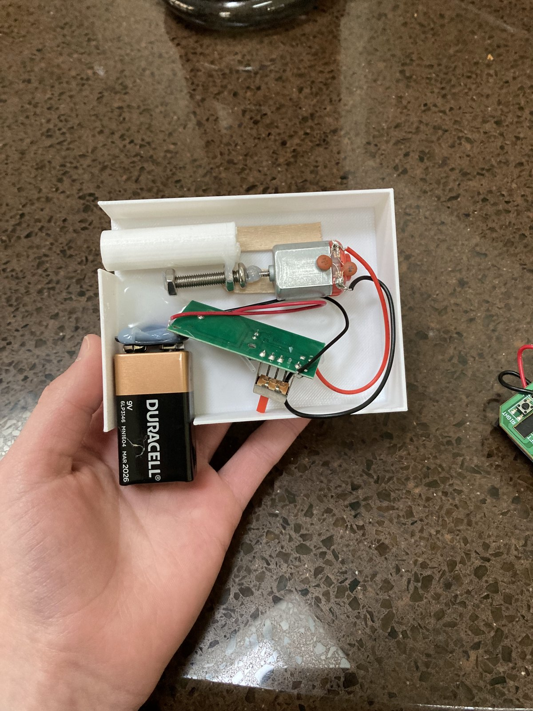
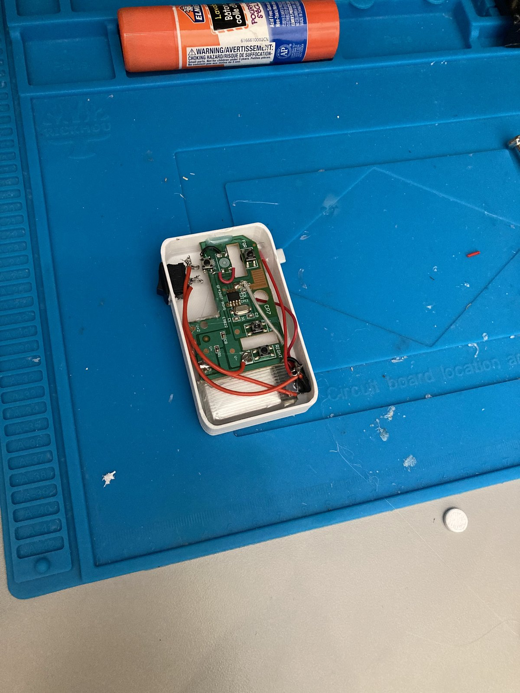
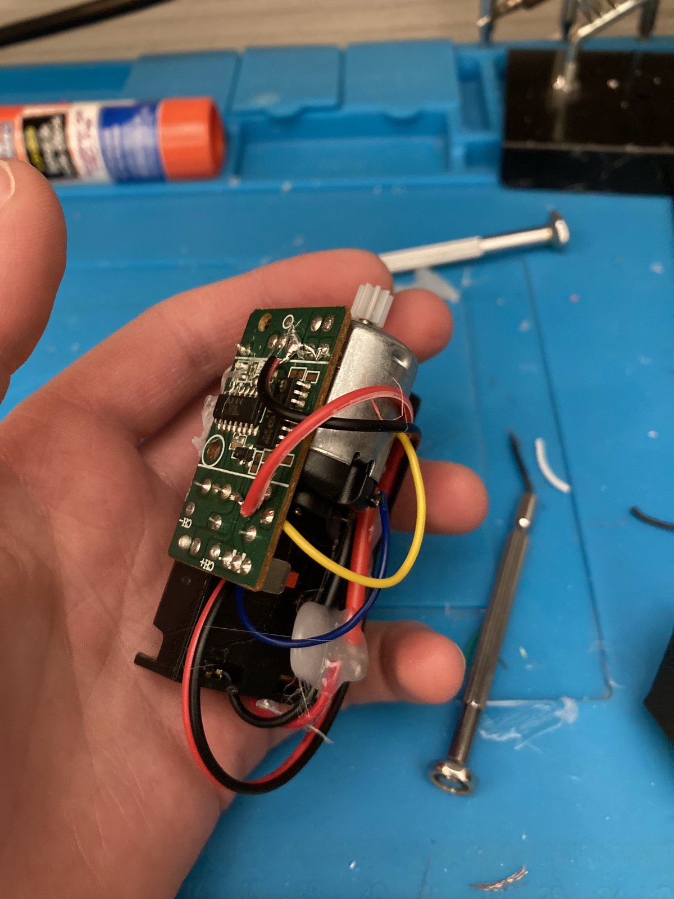
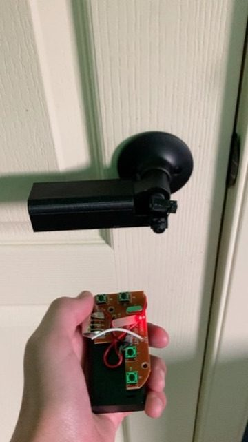

Remote Door Lock
I wanted to automate my room so I could lock and unlock my door with a remote. I started with a simple remote-controlled lock, then redesigned it so the lock was built into a custom door handle that I designed and 3D-printed myself.
- Goal
- Lock and unlock my door by remote
- Versions
- 2
- Final design
- Lock built into a custom 3D-printed handle
- Status
- In daily use
Automating my room
I wanted to automate my room, starting with the door. The goal was to lock and unlock it with a remote instead of by hand.
The project went in two steps. First I built a basic mechanism to prove the idea could work. Then I redesigned it into something that fit naturally into the door itself and that I could use every day.
A simple remote-controlled lock
My first version was a simple remote-controlled lock. It didn’t need to look good. Its job was to prove that I could lock and unlock the door with a remote at all.



Built into a custom door handle
For the second version, I redesigned the lock so it was built into the door handle itself. I designed the handle and 3D-printed it myself, so the locking mechanism fits inside it instead of sitting on the door as a separate box.
That was the real step forward: going from a basic mechanism that worked to one integrated into something I use every day.

From a working mechanism to an everyday design
The first version showed me the idea worked. The redesign taught me that getting something to work is only part of the job: making it fit into something people actually use every day takes a second round of design.